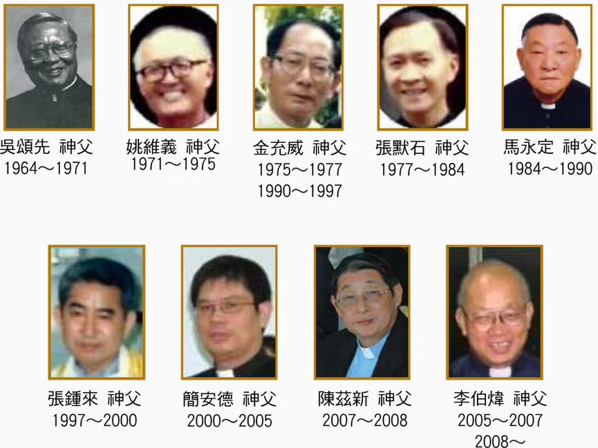

相關歷史
1963年，鮑思高慈幼會應台南教區羅光主教之邀請，前來剛成立不久的台南教區從事牧靈工作。 同年8月，首批慈幼會中華會省會士—四位神父從香港啟程，抵達台南後，暫寄住在主教公署， 並開始找尋牧靈工作的據點。一個月後，在後甲農工新村覓得了房子，暫作臨時小堂用。自此以後， 每星期天上午八時都有彌撒聖祭。初時，教友人數寥寥無幾， 只有來自香港的陳姓夫婦一家八口前來參禮，而當時的首任本堂主任是吳頌先神父。 隨後兩年，教友人數漸增，小堂不敷使用，終於在裕農路8 0 0 巷口找到了一塊土地， 接著就是大興土木，轉瞬間，一幢二層樓的房舍矗立眼前，一樓是小堂，二樓是青年活動中心。 隨著本堂的興建，鄰近慈幼中學和母佑幼稚園也先後崛起， 它們見證並帶動了後甲里的繁榮和進步。歲月流逝，聖母進教之佑堂在歷任本堂主任的辛苦耕耘， 和教友的悉心愛護下日漸成長，教友人數增多了，本堂組織也漸趨茁壯，各類善會，如聖經研讀小組， 聖母軍，祈禱宗會，聖若瑟善終會，聖體軍團，主日學，鮑思高青年會，慈幼協進會， 以及母佑儲蓄互助會等也應運而生，加上『母佑慈音』月刊的發行，拉近了本堂弟兄姐妹間的距離， 增進了彼此間深厚的情誼。就這樣，儘管風雨飄搖，政局動盪，世事多變， 聖母進教之佑堂始終屹立在後甲里地區，扮演著福傳的角色，散發出見證的芬芳。 它宛如一盞明燈，照亮行旅者的旅程；它更是暮鼓晨鐘，在紙醉金迷，擾擾攘攘的世海中， 敲醒迷惘的心靈，喚起夢幻破滅的人迷途知返，回歸父家，重投慈父的懷抱，謳歌讚頌， 永遠稱謝上主的恩慈。
欲了解更多資訊，歡迎瀏覽中華會省慈幼會官方網站。
歷任主任司鐸



堂區服務
彌撒時間
主日彌撒：上午 8:00 / 10:00
平日彌撒：週一至週六 上午 6:30
特殊節日：請參考堂區公告
和好聖事
主日彌撒前30分鐘
或請與神父預約時間
婚配聖事
請至少提前六個月與堂區聯繫
需參加婚前輔導課程
聖洗聖事
嬰兒洗禮：請與堂區辦公室聯繫
成人慕道：每年九月開課
關懷服務
病人傅油：請與堂區聯繫
送聖體：為行動不便教友服務
喪葬禮儀：請與堂區辦公室聯繫
信仰團體
聖母軍
聖詠團
青年會
兒童主日學
聯絡資訊
地址
70175 台南市東區裕農三街1 號
電話
TEL: (06) 331-0412
電子郵件
mail: aquino12@gmail.com